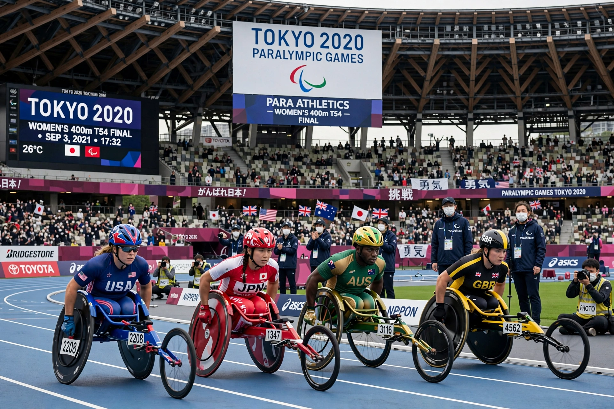

2020 Summer Paralympics

| Host city | Tokyo, Japan |
|---|---|
| Motto | United by Emotion |
| Nations | 162 |
| Athletes | 4,403 |
| Events | 539 in 22 sports |
| Opening | 24 August 2021 |
| Closing | 5 September 2021 |
| Stadium | Olympic Stadium, Tokyo |
The 2020 Summer Paralympics, branded as the Tokyo 2020 Paralympic Games, were an international multi-sport parasports event held from 24 August to 5 September 2021 in Tokyo, Japan. They were the 16th Summer Paralympic Games and the second Paralympics to be hosted by Tokyo, which previously hosted the 1964 Games.
Originally scheduled for 2020, the Games were postponed by one year because of the COVID-19 pandemic, following the same decision taken for the 2020 Summer Olympics. They were held almost entirely without spectators, as a state of emergency in Tokyo remained in force during the event.
Sports
The programme comprised 539 medal events across 22 sports. Badminton and taekwondo made their Paralympic debuts in Tokyo, replacing sailing and 7-a-side football, which had been dropped after Rio 2016. Other sports included archery, athletics, boccia, cycling, equestrian, goalball, judo, powerlifting, rowing, shooting, sitting volleyball, swimming, table tennis, triathlon, wheelchair basketball, wheelchair fencing, wheelchair rugby and wheelchair tennis.
Medal table
China topped the medal table for the fifth consecutive Summer Paralympics, winning 96 gold medals and 207 medals overall. Great Britain finished second with 41 golds, followed by the United States with 37 golds. The host nation, Japan, won 13 gold medals, its best result since Athens 2004.
Participating nations
A total of 162 delegations took part, including a Refugee Paralympic Team of six athletes. Bhutan, Grenada, Maldives, Paraguay and Saint Vincent and the Grenadines made their Paralympic debuts in Tokyo.
See also: 2024 Summer Olympics · International Paralympic Committee